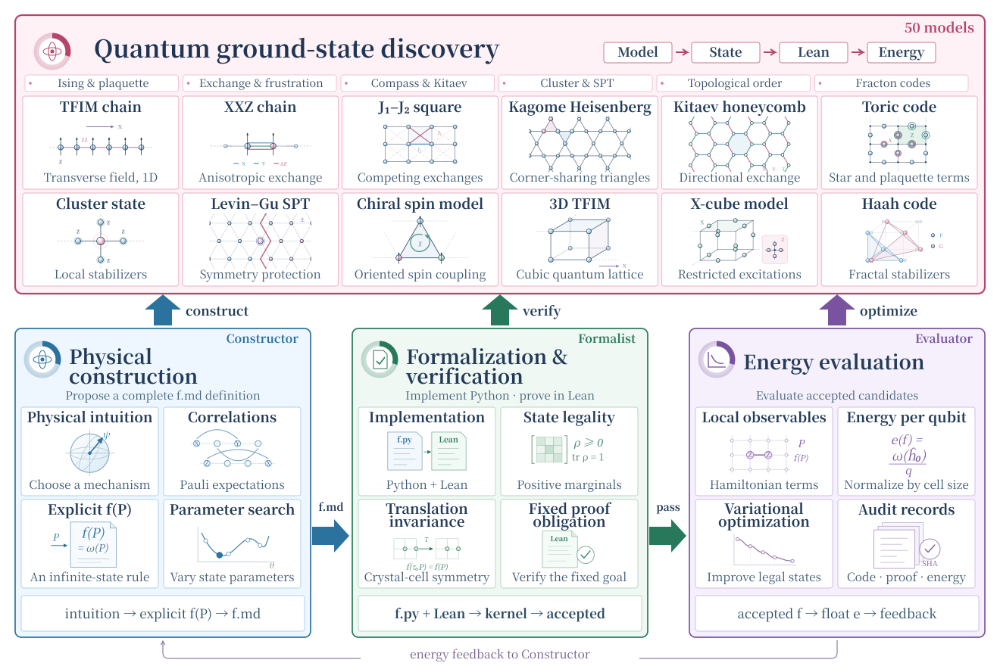

SeekGnomes
Benchmarking LLMs’ physics research capabilities with quantum ground-state calculations.
From a Hamiltonian to a better quantum state.
Can a language model turn physical intuition into an explicit state of an infinite quantum system? SeekGnomes asks LLMs to construct states, establish their validity, and search for lower energy densities.
States are described through Pauli expectation functions, \(f(P)=\omega(P)\). A fixed Lean specification checks legality and translation invariance. The same state definition then enters the energy evaluator.

LLM rank
A first look at verified many-body state construction.
Overall score
0–100 points · 95% intervalP Verified-state rate
30% weightR Improvement rate
30% weightA Mean improvement
40% weight| Rank | Model | Score / 100 | 95% interval | P | R | A |
|---|
This table shows the project's initial test results. We will update the rankings as further tests are completed.
The physical models
50 Hamiltonians. Infinite lattices. Different kinds of quantum structure.
Loading the physical model library…
A shared physical setting
Each site carries a qubit. A finite unit cell is repeated over \(\mathbb Z^d\), in one, two, or three dimensions. Interactions have finite support and repeat under cell translations.
One state, local expectations
A candidate specifies \(f(P)\) for every finitely supported Pauli word. Legality means normalized, positive local density matrices for all finite regions; translation invariance is a separate obligation.
Energy per physical qubit
For \(q\) qubits per cell and local density \(h_0=\sum_j c_jP_j\), evaluate \(e(f)=\frac{1}{q}\sum_j c_jf(P_j)\). Energies are numerical floats; the state proof does not certify rounding error.
Get started
- 01
Check your environment
Linux amd64 containers, at least 2 available CPU cores and 12 GiB available memory. A GPU is not required.
- 02
Configure your LLM
Enter your model ID, API endpoint and API key on your machine.
- 03
Run & inspect
Keep definitions, proofs, verifier logs, energies and resource records. The report separates complete results from technical gaps.
# Check the environment and verifier, without a model API call
./seekgnomes doctor
./seekgnomes self-test
# Enter your API endpoint, model ID and key interactively
./seekgnomes